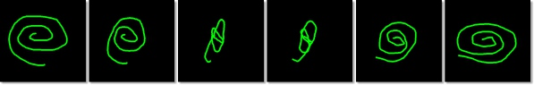

Selection Menu
Actions that can be applied to the Selection layer. The Selection is one of three main segmentation layers (Model, Selection, Mask) which can be used in combibation with other layer. See more about segmentation layers in the Data layers of Microscopy Image Browser section.
Back to Index --> User Guide --> Menu
Contents

Selection to Buffer
Allows to Copy (Ctrl+C shortcut) the Selection of the currently shown slice to a buffer, which later can be pasted to any other slice with the Ctrl+V shortcut or to all slices (Ctrl+Shift+V). In addition there is an option to clear the buffer (Menu->Selection->Selection to Buffer->Clear); this action clears only the buffer and does not affect any of the other layers (Selection, Mask, Model).
..->Mask
Allows the modification of the Mask layer by the contents of the Selection layer. It is possible to replace the mask with the selection, add selection to the mask, or remove selection from the mask. This action can be applied for the currently shown slice or for the whole volume.
Morphological 2D/3D operations
A brief demonstration is available in the following videos:
 https://youtu.be/L-w8eGDfUkU
https://youtu.be/L-w8eGDfUkU
Skeleton for 3D objects, https://youtu.be/Au4vb7max9Q

Performs morphological operations for 2D and 3D objects of the Selection layer. See more in the description of Matlab bwmorph, bwmorph3 and bwskel functions. The following operations are available:
- Branch points - (2D/3D) find branch points of skeleton;
- Clean - (3D) remove isolated voxels;
- Diagonal fill - (Diag) uses diagonal fill to eliminate 8-connectivity of thebackground;
- End points - (2D/3D)finds end points of skeleton;
- Fill - (3D) Fill isolated interior voxels, setting them to 1.
Isolated interior voxels are individual voxels that are set to 0 that are surrounded (6-connected) by voxels set to 1; - Majority - (3D) Keep a voxel set to 1 if 14 or more voxels (the majority) in its 3-by-3-by-3, 26-connected neighborhood are set to 1; otherwise, set the voxel to 0;
- Remove - (3D) Remove interior voxels, setting it to 0.\nInterior voxels are individual voxels that are set to 1 that are surrounded (6-connected) by voxels set to 1;
- Skeleton - (Skel, 2D/3D) with n = Inf, removes pixels on the boundaries of objects but does not allow objects to break apart. The remaining pixels make up the image skeleton. This option preserves the Euler number;
- Spur - removes spur pixels, i.e. the pixels that have exactly one 8-connected neighbor. For example, spur essentially removes the endpoints of lines
- Thin - with n = Inf, thins objects to lines. It removes pixels so that an object without holes shrinks to a
minimally connected stroke, and an object with holes shrinks to a
connected ring halfway between each hole and the outer boundary;
this option preserves the Euler number. Use the "remove branches" option
to remove small branches from each line profile

- Ultimate erosion, (2D/3D) performs ultimate erosion, i.e. object -> to point
Expand to mask borders
Each selected area will be expanded to match the borders of the mask that contains selected area.
Interpolate
Interpolation of the Selection layer is a method to reconstruct Selection on empty slices between two slices containing the Selection layer. Shortcut for this action is i.
There are two types of interpolators. Select the best suitable interpolator in the Preferences dialog or by pressing the Interpolator type button in the Toolbar:
- shape - good for interpolation of the blobs (filled structures).
A brief demonstration is available in the following video:
https://youtu.be/ZcJQb59YzUA?t=4m3s
- line - good for interpolation of the not closed lines (such as membranes).

A brief demonstration is available in the following video:
https://youtu.be/ZcJQb59YzUA?t=2m22s
Please note! there should be only one object in the Selection layer on the starting and ending slices.
Replace selected area in the image
Replaces image intensities in the selected areas with new values. A new dialog will ask to provide new intensities, slices, and the color channels.
A brief demonstration is available in the following video:
https://youtu.be/fNz1vGq7Hb0
Smooth selection
Smoothes the Selection layer in 2D or 3D space.
Invert selection
Inverts the current selection for the whole dataset.
Back to Index --> User Guide --> Menu